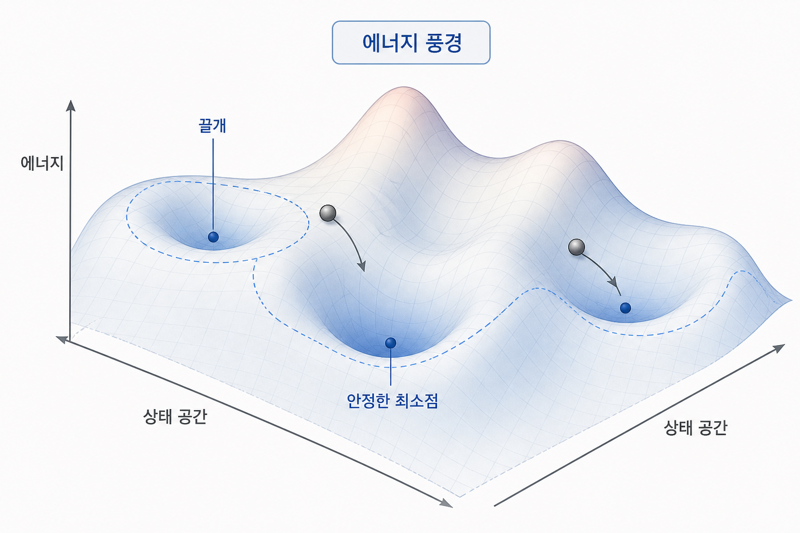
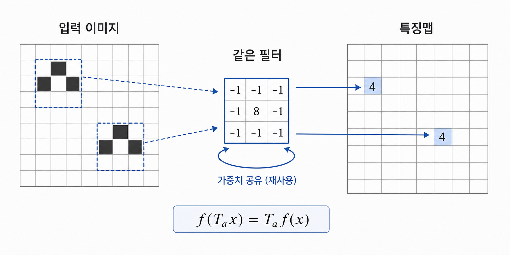
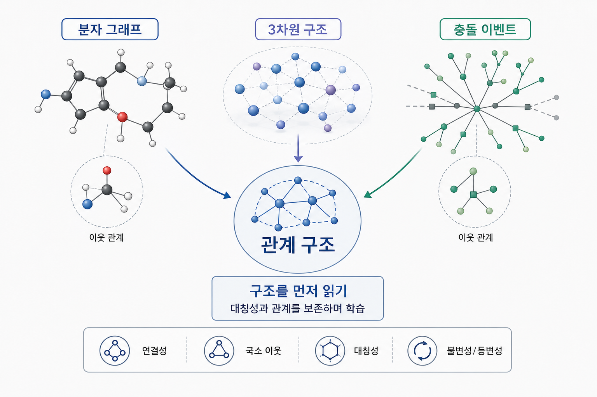
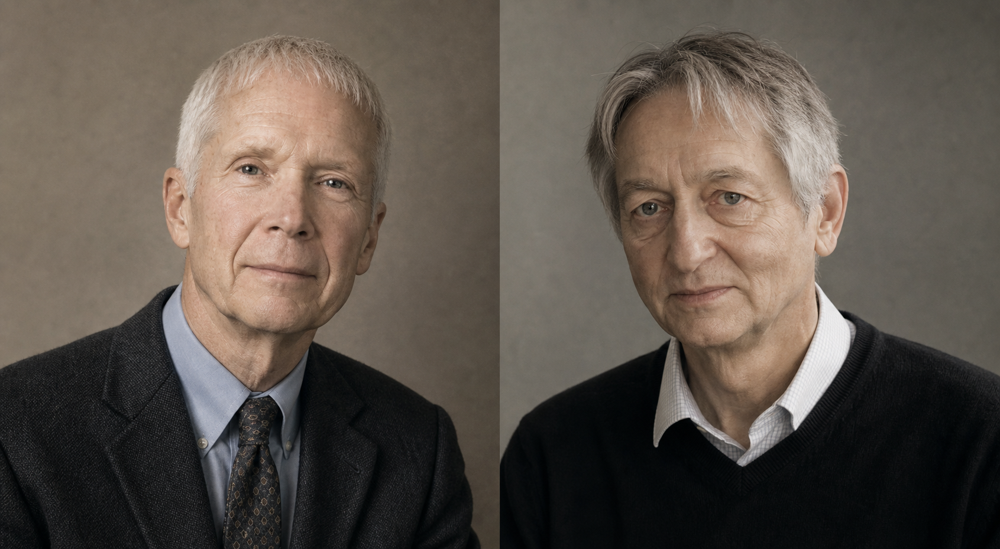

제6장: 지능의 차원 — 대칭성은 어떻게 AI의 ‘지능’이 되는가
1. AI는 왜 물리학의 언어를 닮아가는가?
이 책은 처음부터 대칭성이라는 하나의 질문을 따라 걸어왔습니다. 왜 보존 법칙이 생기는가, 왜 군론이 원자 상태를 분류하는가, 왜 시공간과 내부 대칭이 현대 물리학의 골격이 되는가. 그렇다면 마지막에는 이런 질문이 자연스럽게 따라옵니다. 지능을 만드는 이론에서도 대칭은 중요한가?
오늘날 그 답은 점점 더 분명해지고 있습니다. 인공지능은 단순히 많은 데이터를 쌓아 두었다가 통계를 뽑아내는 기계가 아닙니다. 잘 작동하는 모델일수록, 세상에서 무엇이 바뀌어도 유지되어야 하는 구조와 무엇이 달라져야 하는지를 잘 표현합니다. 다시 말해, 좋은 학습은 결국 불변성(invariance)과 등변성(equivariance)을 어떻게 모델 안에 심어 넣는가의 문제로 수렴합니다.
이 지점에서 AI는 물리학과 닿습니다. 물리학이 우주의 복잡성 속에서 대칭과 보존량을 뽑아내는 학문이었다면, 현대 AI는 데이터의 혼란 속에서 어떤 구조를 보존해야 일반화가 가능한지를 찾는 학문이 되어 가고 있습니다. 그래서 AI를 물리학 책의 마지막 장에 두는 것은 외도가 아니라, 오히려 대칭의 사상을 오늘의 언어로 확장하는 일에 가깝습니다.
조금 더 직설적으로 말하면, 물리학과 기계학습은 둘 다 "모든 세부를 외우지 않고도 세계를 압축하는 법"을 찾습니다. 물리학에서는 그 압축이 운동방정식, 대칭군, 보존량의 형태로 나타났고, AI에서는 표현 학습, 아키텍처 설계, 귀납적 편향의 형태로 나타납니다. 서로 쓰는 기호는 달라도, 복잡성 속에서 반복되는 구조를 먼저 붙잡는다는 태도는 놀라울 만큼 닮아 있습니다.
2. Hopfield에서 시작된 물리학적 신경망
이 연결은 비유가 아니라 역사적 사실이기도 합니다. 2024년 노벨 물리학상은 John J. Hopfield와 Geoffrey Hinton에게 수여되었습니다. 공식 수상 이유는 "인공신경망을 이용한 기계학습을 가능하게 한 기초적 발견과 발명"이었습니다. 물리학의 가장 권위 있는 상이 AI 연구에 수여되었다는 사실은, 이제 인공지능이 물리학 바깥의 유행어가 아니라 물리학적 사고의 연장선 위에 있다는 상징적 선언처럼 보입니다.
특히 홉필드의 공헌은 이 책의 주제와 직접 이어집니다. 홉필드 네트워크는 기억을 단순한 저장공간이 아니라, 하나의 에너지 풍경(energy landscape) 위의 안정한 상태로 이해합니다. 각 뉴런의 상태를 바꾸어 가며 전체 에너지가 낮아지는 방향으로 진화시키면, 시스템은 결국 어떤 국소 최소점에 도달합니다. 이 최소점이 곧 기억된 패턴입니다.
이 그림은 통계물리학자에게 낯설지 않습니다. 스핀들의 상호작용, 자유에너지, 안정 상태, 잡음 속에서의 완화(relaxation) 같은 언어가 거의 그대로 등장하기 때문입니다. 즉, 초기 신경망 이론의 일부는 뇌를 흉내 낸다기보다, 많은 자유도를 가진 복잡한 계가 어떻게 안정된 구조를 형성하는가라는 물리학의 오래된 질문을 새로운 대상에 적용한 것이었습니다.
홉필드 네트워크의 고전적 에너지 함수는 대략
처럼 쓸 수 있습니다. 여기서 $s_i$는 뉴런의 이산 상태, $w_{ij}$는 연결 강도, $\theta_i$는 문턱값입니다. 중요한 것은 세부 기호보다 구조입니다. 적절한 비대칭이 없고 업데이트 규칙을 잘 잡아 주면, 네트워크는 상태를 바꿀 때마다 에너지를 낮추거나 적어도 올리지 않는 방향으로 움직입니다. 그래서 동역학 전체를 "기억을 향해 미끄러져 내려가는 과정"으로 볼 수 있습니다.
이 관점은 기억의 개념 자체를 바꿉니다. 보통 기억은 데이터를 서랍에 넣어 두는 일처럼 상상되지만, 홉필드 네트워크에서 기억은 하나의 끌개(attractor)입니다. 깨끗한 패턴이 아니라 약간 손상된 입력을 넣어도, 시스템은 그 근처의 안정 상태로 수렴합니다. 흐릿한 사진 조각이나 불완전한 글자 일부를 보고도 원래 패턴을 복원하는 이유가 여기에 있습니다. 물리학 언어로 하면, 노이즈 속에서도 basin of attraction 안으로 들어오면 같은 최소점으로 떨어집니다.
예를 들어 검은 바탕에 흰색 숫자 8 패턴을 여러 번 학습시켰다고 해 봅시다. 이제 입력의 일부 획을 지우거나 몇 개의 픽셀을 뒤집어도, 네트워크는 완전히 새로운 숫자로 튀기보다 원래 8에 해당하는 안정 상태로 되돌아가려 합니다. 기억이 "정확히 같은 입력을 다시 찾는 일"이 아니라, 손상된 관측을 더 깊은 패턴으로 끌어당기는 일이라는 뜻입니다. 이 장면은 물리학에서 계가 작은 교란을 받은 뒤 다시 평형점 근처로 돌아오는 모습과도 닮아 있습니다.

2.5 볼츠만 머신과 확률적 세계
힌턴의 작업도 마찬가지입니다. 볼츠만 머신과 그 변형들은 이름부터 통계역학의 그림자를 드리웁니다. 확률 분포를 에너지 함수로 기술하고, 보이지 않는 변수들을 도입해 데이터의 구조를 설명하려는 발상은 물리학과 기계학습의 경계가 얼마나 얇은지를 잘 보여 줍니다.
볼츠만 머신의 핵심 아이디어는 결정론적 하강만으로는 충분하지 않다는 데 있습니다. 실제 데이터는 잡음이 있고, 같은 관측 뒤에 여러 잠재 원인이 숨어 있을 수 있습니다. 따라서 시스템을 하나의 최저점으로 곧장 밀어 넣기보다, 에너지가 낮은 상태일수록 더 자주 나타나는 확률적 앙상블로 보는 편이 더 자연스럽습니다.
통계역학의 언어를 빌리면, 상태 $x$의 확률은 대략
꼴을 따릅니다. 여기서 $Z$는 모든 상태를 합친 정규화 상수이고, $T$는 온도에 해당하는 매개변수입니다. 기계학습에서는 보통 이 온도를 1로 두거나 흡수해 쓰지만, 직관은 그대로입니다. 에너지가 낮은 상태일수록 더 그럴듯하고, 높은 상태는 덜 그럴듯합니다. 즉, 학습은 단지 정답 하나를 찍는 일이 아니라 데이터가 자주 머무는 에너지 지형을 재구성하는 일이 됩니다.
이 관점을 조금 더 현실적으로 바꾸어 말하면, 볼츠만 머신은 "이 샘플이 맞다"와 "이 샘플은 절대 아니다"를 칼처럼 가르기보다, 여러 가능한 설명에 가중치를 나누어 줍니다. 흐릿한 손글씨 이미지가 들어왔을 때 그것이 3일 확률과 8일 확률이 동시에 남아 있을 수 있다는 뜻입니다. 에너지와 확률의 대응은 바로 이런 모호성을 다루는 언어입니다. 낮은 에너지는 더 자주 선택되는 설명이고, 높은 에너지는 덜 설득력 있는 설명입니다.
이 대목에서 물리학과 AI는 거의 같은 문장을 공유합니다. 물리학자는 미시적 상태들의 분포에서 거시적 성질을 읽고, 기계학습 연구자는 관측 데이터의 분포에서 잠재 구조를 읽습니다. 두 경우 모두 중요한 것은 개별 샘플 하나가 아니라, 어떤 구조가 많은 경우를 조직하고 있는가입니다.
물론 오늘의 대형 생성 모델이 곧바로 고전적 볼츠만 머신의 직계 후손은 아닙니다. 하지만 "복잡한 데이터를 적절한 잠재변수와 에너지 혹은 확률 구조로 압축한다"는 발상은 여러 세대의 모델에 스며 있습니다. 변분 추론, 에너지 기반 모델, score matching 같은 현대적 기법들에서도 물리학의 냄새가 완전히 사라지지 않는 이유가 여기에 있습니다.
3. 귀납적 편향: 대칭을 아는 네트워크가 더 빨리 배운다
현대 딥러닝의 성공을 단지 "모델이 커졌기 때문"이라고 말하면 절반만 본 셈입니다. 중요한 절반은 어떤 구조를 미리 모델 안에 심어 두었는가입니다. 이를 기계학습에서는 귀납적 편향(inductive bias)이라고 부릅니다.
가장 유명한 예가 CNN(합성곱 신경망)입니다. 이미지 속 고양이는 화면 왼쪽에 있든 오른쪽에 있든 여전히 고양이입니다. 즉, 시각 인식에는 공간적 평행이동에 대한 일종의 등변성이 필요합니다. 합성곱 연산은 같은 필터를 모든 위치에 재사용함으로써 바로 그 구조를 모델에 새겨 넣습니다. 그래서 CNN은 완전히 일반적인 전연결망보다 훨씬 적은 데이터로도 더 잘 일반화할 수 있습니다.
이것은 단순한 공학적 꼼수가 아닙니다. 물리학자의 눈으로 보면, CNN은 "세상이 어떤 변환 아래에서 동일하게 보이는가?"라는 질문을 아키텍처 수준에서 구현한 장치입니다. 다시 말해, 좋은 네트워크는 모든 것을 무식하게 학습하지 않습니다. 변하지 않을 것은 미리 존중하고, 변해야 할 것만 데이터에서 배웁니다.
이를 조금 더 손에 잡히게 보자. 고양이의 귀 모양을 감지하는 필터가 있다고 합시다. 이 필터는 화면 왼쪽 위에 있는 귀에도, 중앙에 있는 귀에도, 오른쪽 아래에 있는 귀에도 같은 방식으로 반응해야 합니다. 만약 위치마다 전혀 다른 규칙을 배워야 한다면 모델은 똑같은 패턴을 수없이 중복해서 외워야 합니다. 합성곱은 이 중복을 제거합니다. 한 위치에서 배운 패턴을 다른 위치에서도 공유하게 함으로써, 공간적 평행이동에 대한 구조를 네트워크 자체에 심습니다.
수식으로는 입력을 $x$, 평행이동 연산을 $T_a$라 할 때, 합성곱 층은 대략
라는 의미의 등변성을 가집니다. 입력을 옮기면 출력 특징맵도 같은 방식으로 옮겨집니다. 그리고 그 뒤에 global pooling 같은 요약 연산을 더하면, 비로소 위치 자체에는 덜 민감한 불변성이 생깁니다. 이 구분은 중요합니다. 합성곱은 처음부터 모든 것을 불변하게 만들지 않고, 먼저 어떻게 함께 변해야 하는가를 정렬합니다. 물리학에서도 먼저 군 작용이 어떻게 상태를 바꾸는지를 이해한 뒤, 그 안에서 불변량을 찾는다는 점에서 구조가 닮아 있습니다.
여기서 pooling의 역할을 따로 떼어 보는 것도 중요합니다. 합성곱이 "같은 패턴을 다른 위치에서도 같은 규칙으로 읽는다"는 약속이라면, pooling은 "정확히 어디에 있었는지는 조금 버리고, 있었느냐 없었느냐를 더 중요하게 본다"는 압축입니다. 즉, 합성곱은 등변성을 만들고 pooling은 그 등변적 특징들 위에서 부분적인 불변성을 강화합니다. 둘은 자주 함께 쓰이지만 기능은 다릅니다. 이 차이를 놓치면, 왜 CNN이 단순히 필터 몇 개를 더한 구조가 아닌지 이해하기 어렵습니다.

3.5 등변성은 왜 공짜 성능이 아닌가
여기서 한 가지 조심할 점도 있습니다. 모든 문제에 무턱대고 강한 대칭을 넣는다고 좋은 것은 아닙니다. 예를 들어 숫자 6과 9를 구분해야 하는 작업에서 회전 불변성을 너무 강하게 넣으면 오히려 중요한 차이를 잃을 수 있습니다. 즉, 모델 설계에서 중요한 것은 "대칭을 많이 넣는다"가 아니라, 문제가 실제로 갖는 대칭을 정확히 반영한다는 것입니다.
이 점은 물리학과도 정확히 같습니다. 자연이 회전 대칭적일 때 각운동량 보존이 나오지만, 외부 자기장처럼 특정 방향이 주어지면 그 대칭은 깨집니다. AI에서도 데이터가 어떤 변환에는 안정적이지만 다른 변환에는 민감하다면, 그 구조를 구분해서 모델에 넣어야 합니다. 좋은 귀납적 편향은 일반성을 강요하는 규칙이 아니라, 문제의 기하학을 제대로 읽은 결과입니다.
4. geometric deep learning: 좌표계보다 구조를 먼저 보는 학습
이 아이디어는 더 일반화되어 geometric deep learning으로 이어집니다. 회전, 반사, 순열, 그래프 위의 대칭, 군 작용에 대한 등변성을 신경망 구조 안에 직접 집어넣는 접근입니다. 분자 구조 예측, 단백질 접힘, 입자 충돌 데이터 분석처럼 좌표계 선택이 본질이 아닌 문제에서는 이런 대칭 친화적 구조가 특히 강력합니다.
분자 예측을 예로 들면, 분자를 구성하는 원자들의 절대 좌표를 종이에 어떻게 그렸는지는 중요하지 않습니다. 분자를 통째로 회전하거나 평행이동해도 같은 분자이고, 원자 번호를 다시 매겨도 물리적 대상은 바뀌지 않습니다. 따라서 좋은 모델은 이 분자가 어느 방향을 보고 있는가보다 원자들이 서로 어떤 관계를 맺는가를 먼저 읽어야 합니다. 바로 이런 이유로 그래프 신경망이나 SE(3)-등변 네트워크가 힘을 발휘합니다.
단백질 구조 예측에서는 이 요구가 더 극적입니다. 단백질은 긴 아미노산 사슬이 접혀 만든 3차원 구조로 기능이 결정되는데, 단순한 서열 정보만으로는 그 형태를 바로 읽기 어렵습니다. 여기서 중요한 것은 분자를 화면에 어떻게 돌려 놓았느냐가 아니라, 어떤 잔기가 어떤 거리와 각도로 이웃하는가입니다. 따라서 회전과 평행이동에 대해 일관되게 반응하는 모델이 훨씬 자연스럽고, 실제로 구조 예측의 핵심도 관계 기하를 얼마나 잘 포착하느냐에 달려 있습니다.
입자물리 실험 데이터도 비슷합니다. 검출기에서 얻는 충돌 사건은 입자들의 운동량과 상호작용 패턴으로 주어지는데, 중요한 것은 좌표 표기의 사소한 차이보다 사건의 관계 구조입니다. 어떤 분석에서는 입자 집합의 순서가 본질이 아니고, 어떤 분석에서는 회전 대칭이나 로런츠 구조를 존중해야 합니다. 이때 대칭을 알고 있는 네트워크는 같은 데이터를 더 적은 낭비로 읽습니다.
예를 들어 강입자 충돌에서 나온 수십 개의 입자들을 분석할 때, 연구자가 목록의 첫 번째 줄에 어느 입자를 적었는지는 물리적으로 중요하지 않습니다. 중요한 것은 어떤 입자들이 함께 군집을 이루는지, 전체 운동량이 어떻게 분포하는지, 드문 붕괴 신호가 배경과 어떻게 다른지입니다. 그래서 입자 집합의 순열 대칭이나 검출기 기하를 존중하는 네트워크는 단순한 표 형식 입력보다 더 물리적인 표현을 얻습니다. 이것은 대칭이 성능 향상용 요령이 아니라, 데이터 표현 자체를 더 정직하게 만드는 원리임을 보여 줍니다.
단백질 구조 예측이나 재료 과학에서도 사정은 비슷합니다. 원자들의 상대 배치와 결합 구조가 중요하지, 연구자가 화면에 어떻게 회전시켜 놓았는지는 중요하지 않습니다. 그래서 geometric deep learning은 단지 그래프에 신경망을 올린 기술이 아니라, 문제를 좌표의 목록이 아니라 대칭이 있는 기하학적 대상으로 다시 읽는 방법론입니다.
재료 과학에서는 결정 구조와 국소 결합 환경이 전기적, 기계적 성질을 크게 좌우합니다. 같은 원자 조성을 가진 물질이라도 배열 방식이 다르면 전혀 다른 성질이 나타납니다. 이런 문제에서는 좌표 하나하나보다 이웃 관계와 대칭이 더 본질적인 정보입니다. geometric deep learning이 힘을 갖는 이유는, 바로 그 관계 구조를 모델의 입력 형식이 아니라 학습 규칙 자체로 취급하기 때문입니다.

4.5 월드 모델과 표현 학습: 보존되는 것을 잡아내는 기계
더 흥미로운 지점은, 최근의 AI가 단지 정답 분류를 넘어 세상에 대한 내부 표현을 배우기 시작했다는 사실입니다. 좋은 표현 학습이란 데이터의 표면적 잡음을 걷어내고, 그 뒤에 숨어 있는 안정된 구조를 뽑아내는 일입니다. 이것 역시 물리학의 감각과 매우 가깝습니다.
예를 들어 동영상을 이해하는 모델이 매 프레임의 픽셀을 따로 외우는 대신, 물체의 정체성, 운동, 상호작용 같은 더 안정된 변수를 추적한다면 그것은 이미 작은 의미의 "이론"을 만든 것입니다. 월드 모델(world model)이나 model-based learning이 겨냥하는 바도 여기에 있습니다. 관측값의 홍수 속에서, 어떤 양이 상태를 요약하고 어떤 규칙이 그 상태를 진화시키는지를 배우는 것입니다.
물리학에서 좋은 좌표는 임의의 숫자를 늘어놓는 좌표가 아니라, 문제를 가장 압축적으로 쓰게 해 주는 좌표입니다. 진자의 경우 각도 하나면 충분하고, 강체는 몇 개의 자유도로 요약되며, 장론에서는 적절한 장 변수가 중심이 됩니다. AI의 표현 학습도 비슷합니다. 픽셀 전체를 매번 새로 계산하는 대신, 장면의 동일성, 물체의 지속성, 원인과 결과의 흐름 같은 더 안정된 자유도를 배우는 편이 일반화에 유리합니다.
물론 오늘의 AI가 진짜로 뉴턴 역학이나 양자장론을 명시적으로 재발견했다고 말하는 것은 과장입니다. 하지만 분명한 것은 있습니다. 잘 설계된 모델일수록 무작위한 픽셀 수준이 아니라, 더 안정적이고 재사용 가능한 구조를 잡아내려 한다는 점입니다. 그 구조가 좌표 변환에 대해 어떻게 반응하는지, 무엇을 보존하고 무엇을 버리는지가 성능을 좌우합니다.
여기서 대칭은 장식이 아닙니다. 대칭은 일반화의 경제학입니다. 모델이 세상을 이해하려면 모든 경우를 하나씩 외울 수는 없습니다. 대신 서로 다른 현상들 사이에서 같은 것으로 취급해도 되는 부분을 묶어야 합니다. 물리학에서 군론이 수많은 현상을 하나의 표로 압축했듯이, 기계학습에서도 대칭은 데이터의 차원을 줄이고 학습을 가속하는 구조적 압축 장치가 됩니다.
5. 물리학자들, 신경망으로 건너가다

이 장의 흐름은 단지 아이디어의 유사성만 말하는 것이 아닙니다. 실제로 물리학적 훈련을 받은 연구자들은 여러 시기에 AI 발전의 중요한 갈림길에 반복해서 등장했습니다. 홉필드는 응집물질과 통계물리의 감각을 신경망에 가져왔고, 힌턴의 작업 역시 에너지와 확률 분포의 언어를 깊이 끌어안고 있었습니다.
오늘날에도 입자물리, 응집물질, 계산물리 출신 연구자들이 representation learning, diffusion model, energy-based model, graph learning 같은 분야에서 활발하게 활동합니다. 그 이유는 단순히 수학을 잘해서가 아닙니다. 그들은 원래부터 많은 자유도 속에서 핵심 변수만 남기고, 거대한 상태 공간을 몇 개의 구조적 원리로 압축하며, 노이즈 속에서 의미 있는 패턴을 분리하는 훈련을 받아 왔습니다. 이는 곧 현대 AI가 요구하는 감각이기도 합니다.
최근의 diffusion model이 잡음을 조금씩 제거하며 구조를 복원하는 방식이나, energy-based model이 데이터가 머무는 낮은 에너지 영역을 직접 모형화하려는 시도도 이 연속선 위에 있습니다. 표현은 달라졌지만 질문은 비슷합니다. 어떤 상태들이 자연스럽고, 어떤 방향의 변화가 구조를 보존하며, 복잡한 분포를 가장 경제적으로 기술하는 변수는 무엇인가? 현대 AI의 여러 흐름이 다시 물리학적 직관과 만나는 이유가 여기에 있습니다.
이 장면은 책 전체의 결산처럼 보이기도 합니다. 갈루아는 대칭의 문법을, 위그너는 표현의 언어를, 뇌터는 보존 구조를, 디랙과 게이지 이론은 더 높은 수준의 제약과 생성 원리를 보여 주었습니다. 현대 AI는 그 유산을 전혀 다른 하드웨어와 데이터 환경 위에서 다시 시험하고 있습니다. 대상은 달라졌지만 질문의 형식은 여전히 같습니다. 무엇을 같은 것으로 보고, 무엇을 다른 것으로 보아야 하는가?
6. 제2의 물리학이 아니라, 물리학의 확장
그래서 인공지능을 두고 "제2의 물리학"이라고 말할 때는 조심할 필요가 있습니다. AI가 물리학을 대체한다는 뜻은 아닙니다. 더 정확한 표현은 이렇습니다. 현대 AI는 물리학이 오래전부터 다루어 온 구조적 사고를 새로운 계산 체계 위에서 다시 실험하는 장입니다.
뇌터는 대칭이 보존 법칙을 낳는다고 말했습니다. 위그너는 대칭이 상태를 분류한다고 보여 주었습니다. 디랙은 대칭을 끝까지 밀어붙인 결과 반입자까지 시야에 넣었습니다. 그리고 오늘의 AI 연구는, 잘 학습하는 시스템이란 결국 어떤 불변성과 어떤 등변성을 내장해야 하는가를 묻고 있습니다. 질문의 형식이 놀라울 만큼 닮아 있습니다.
이 점에서 AI는 물리학의 외부 주제가 아닙니다. 오히려 물리학이 세상을 이해하기 위해 개발해 온 언어, 즉 에너지, 안정성, 대칭, 표현, 자유도, 보존 구조가 이제 지능을 설계하는 문제로 흘러들어 간 것입니다. 물리학자들이 신경망 연구에서 두드러진 활약을 해 온 것도 우연이 아닙니다. 그들은 원래부터 복잡한 계 속에서 패턴을 찾고, 적절한 상태변수를 고르고, 거대한 차원의 혼란을 몇 개의 구조적 원리로 압축하는 훈련을 받아 왔기 때문입니다.
이 책의 마지막에서 우리가 얻게 되는 결론은 아마 이것일 것입니다. 대칭성은 단지 우주를 설명하는 언어가 아닙니다. 그것은 복잡성 속에서 지능이 무엇을 붙잡아야 하는가를 알려 주는 언어이기도 합니다. 우주가 대칭을 통해 스스로를 조직했다면, 지능 역시 대칭을 이해할 때 비로소 세계를 더 깊이, 더 적은 낭비로 파악할 수 있습니다. 그 순간 AI는 물리학에서 멀어진 것이 아니라, 물리학의 가장 오래된 질문을 새로운 방식으로 계속 묻고 있는 셈입니다.